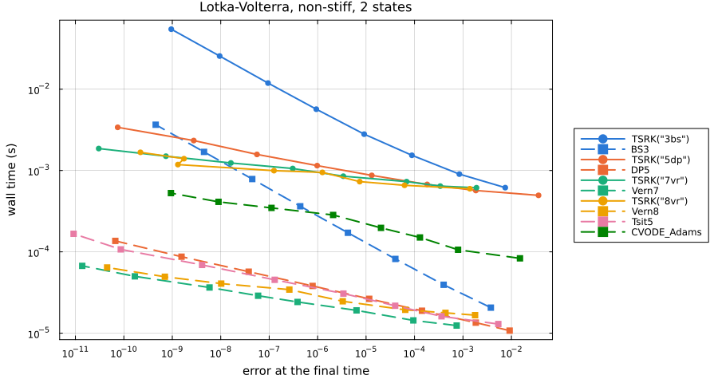
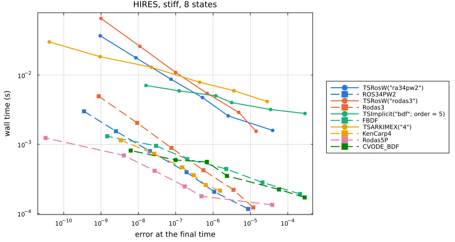
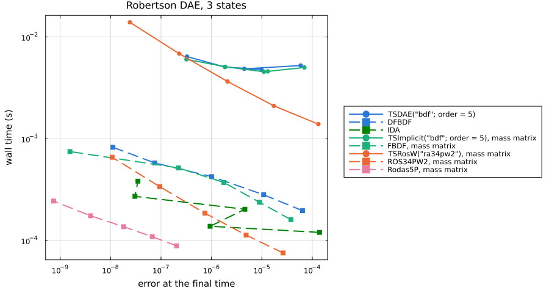
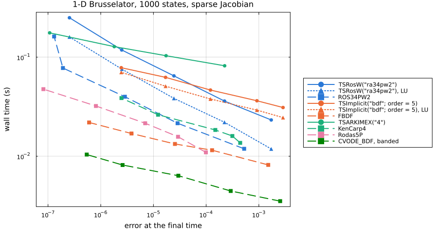

Work-precision benchmarks
These benchmarks put PETScDiffEq's TS families next to OrdinaryDiffEq and Sundials on four standard problems: a non-stiff ODE, a stiff ODE, a DAE, and a 1-D PDE with a sparse Jacobian. Each point is one pair of tolerances: the error against a reference solution, and the wall time of the fastest of up to 20 solves, as DiffEqDevTools' WorkPrecisionSet measures them. Lower and further left is better.
The error is the mean absolute error at the final time. Each reference was checked against a second solver, and the two agree at the final time to within 5e-10 on every problem (reference.csv). That is below every error plotted: more than 180 times below on three problems, and 5.6 times below on HIRES, where the two differ by 5.9e-12 and the smallest error plotted is 3.3e-11.
Solid lines with circles are PETScDiffEq with PETSc's default linear solver, GMRES preconditioned with ILU(0). Dotted lines with triangles are PETScDiffEq with a direct LU solve, petsc_options = ["-ksp_type", "preonly", "-pc_type", "lu"]. Dashed lines with squares are OrdinaryDiffEq or Sundials. Lines of one color are the same method or its nearest counterpart. Five pairs share their coefficients, which fixed-step solves confirm by agreeing to rounding: TSRK("3bs") and BS3, TSRK("5dp") and DP5, TSRosW("ra34pw2") and ROS34PW2, TSRosW("rodas3") and Rodas3, and TSARKIMEX("4") and KenCarp4, the last with tight Newton tolerances. For the two TSRosW pairs this holds only when $f$ does not depend on $t$, as in all four problems here. PETSc's Rosenbrock-W leaves out the time derivative of $f$, so when $f$ depends on $t$, TSRosW("ra34pw2") keeps its order but no longer matches ROS34PW2, and TSRosW("rodas3") falls to first order; see TSRosW. TSRK("7vr") and TSRK("8vr") use different Verner pairs from Vern7 and Vern8.
The numbers were measured with Julia 1.10.12, one thread, on a 16-CPU Modal container, with PETSc_jll 3.22.2 and the package versions in environment.csv. Every point is in the CSV file next to its plot, with its step, rejection, function, Jacobian and Newton iteration counts.
Summary
PETScDiffEq is slower than the fastest OrdinaryDiffEq or Sundials method on all four problems, and slower than the same method in OrdinaryDiffEq wherever the coefficients match:
| Problem | Fastest PETScDiffEq method, relative to the fastest overall | Same method, PETScDiffEq relative to OrdinaryDiffEq |
|---|---|---|
| Lotka-Volterra, 2 states | 32 | 29 (TSRK("5dp"), DP5) |
| HIRES, 8 states | 21 | 16 (TSRosW("ra34pw2"), ROS34PW2) |
| Robertson DAE, 3 states | at least 50 | 26 (TSRosW("ra34pw2"), ROS34PW2) |
| Brusselator, 1000 states | 7.1 | 1.8 (TSRosW("ra34pw2") with LU, ROS34PW2) |
The gap narrows as the problem grows because much of PETScDiffEq's cost does not grow with it: a fixed cost for each solve, and a cost for each step and each call back into Julia. With BDF and ARKIMEX, PETSc also rebuilds and refactors the Jacobian at every Newton iteration, where OrdinaryDiffEq and Sundials reuse one over many steps. Both are measured under Where the time goes.
Non-stiff: Lotka-Volterra
$u_1' = 1.5 u_1 - u_1 u_2$, $u_2' = -3 u_2 + u_1 u_2$, $u(0) = (1, 1)$, $t \in [0, 10]$, with abstol from 1e-6 to 1e-13 and reltol from 1e-3 to 1e-10. The reference is Vern9 at 1e-14.

Time to an error of 1e-8, interpolated between the measured points that no other run beats on both error and time (data):
| Solver | Time (ms) | Relative to the fastest |
|---|---|---|
TSRK("3bs") | 25.1 | 727.6 |
BS3 | 1.3 | 37.6 |
TSRK("5dp") | 1.98 | 57.2 |
DP5 | 0.0681 | 2.0 |
TSRK("7vr") | 1.28 | 36.9 |
Vern7 | 0.0346 | 1.0 |
TSRK("8vr") | 1.1 | 31.7 |
Vern8 | 0.0408 | 1.2 |
Tsit5 | 0.062 | 1.8 |
CVODE_Adams | 0.409 | 11.8 |
TSRK("5dp") and DP5 take nearly the same steps: 549 and 579 at the tightest tolerance, ending 7.5e-11 and 6.7e-11 from the reference, in 3.4 ms and 0.14 ms. The whole gap is the cost of a step, 6.1 µs against 0.24 µs. At loose tolerances the PETScDiffEq lines flatten near 0.5 ms, about twice the fixed cost of a solve measured below.
Stiff: HIRES
The eight-state HIRES problem on $[0, 321.8122]$, with abstol from 1e-5 to 1e-10 and reltol from 1e-2 to 1e-7. The reference is Rodas5P at 1e-14.

Time to an error of 1e-7 (data):
| Solver | Time (ms) | Relative to the fastest |
|---|---|---|
TSRosW("ra34pw2") | 7.94 | 27.6 |
ROS34PW2 | 0.486 | 1.7 |
TSRosW("rodas3") | 10.9 | 37.9 |
Rodas3 | 0.801 | 2.8 |
TSImplicit("bdf"; order = 5) | 6.02 | 20.9 |
FBDF | 0.718 | 2.5 |
TSARKIMEX("4") | 10.1 | 35.1 |
KenCarp4 | 0.516 | 1.8 |
Rodas5P | 0.288 | 1.0 |
CVODE_BDF | 0.593 | 2.1 |
At abstol = 1e-7, TSRosW("ra34pw2") makes 144 step attempts in 4.7 ms, about 33 µs each, and ROS34PW2 makes 211 in 0.40 ms, about 1.9 µs each. The implicit families pay for their Jacobians as well; see Where the time goes.
DAE: Robertson
Robertson's reaction on $[0, 10^5]$, both as a DAEProblem whose third equation is $u_1 + u_2 + u_3 = 1$ and as an ODEProblem with the mass matrix $\mathrm{diag}(1, 1, 0)$, with abstol from 1e-6 to 1e-10 and reltol from 1e-2 to 1e-6. The reference is Rodas5P on the mass-matrix form at 1e-14, checked against IDA at 1e-12.

Time to an error of 1e-6 (data):
| Solver | Time (ms) | Relative to the fastest |
|---|---|---|
TSDAE("bdf"; order = 5) | 5.51 | 62.2 |
DFBDF | 0.425 | 4.8 |
IDA | 0.138 | 1.6 |
TSImplicit("bdf"; order = 5), mass matrix | 5.41 | 61.1 |
FBDF, mass matrix | 0.407 | 4.6 |
TSRosW("ra34pw2"), mass matrix | 4.51 | 50.9 |
ROS34PW2, mass matrix | 0.171 | 1.9 |
Rodas5P, mass matrix | at most 0.0886 | 1.0 |
Rodas5P was already below 1e-6 at the loosest tolerances, so its entry is its cheapest run and the other ratios are lower bounds. PETSc's BDF gives similar errors and times through TSDAE and through the mass matrix. Its error follows the tolerance less closely than DFBDF's: from 5.9e-5 at the loosest tolerances to 3.3e-7 at the tightest, where DFBDF goes from 6.4e-5 to 1.1e-8.
PDE: 1-D Brusselator
The Brusselator of Hairer and Wanner, $u_t = 1 + u^2 v - 4u + \alpha u_{xx}$, $v_t = 3u - u^2 v + \alpha v_{xx}$, $\alpha = 1/50$, on 500 interior points of $[0, 1]$ with $u = 1$ and $v = 3$ at the ends and $u(x, 0) = 1 + \sin(2\pi x)$, $v(x, 0) = 3$, over $t \in [0, 10]$. That is 1000 states, with $u$ and $v$ interleaved so the Jacobian has bandwidth 2. Every method but CVODE gets the sparsity as a jac_prototype and builds the Jacobian with ForwardDiff and colouring; CVODE uses its banded difference quotients. abstol runs from 1e-5 to 1e-9 and reltol from 1e-3 to 1e-7. The reference is Rodas5P at 1e-12, checked against CVODE_BDF at 1e-12.

Time to an error of 1e-5 (data):
| Solver | Time (ms) | Relative to the fastest |
|---|---|---|
TSRosW("ra34pw2") | 82 | 11.5 |
TSRosW("ra34pw2"), LU | 50.2 | 7.1 |
ROS34PW2 | 28.6 | 4.0 |
TSImplicit("bdf"; order = 5) | 66.5 | 9.4 |
TSImplicit("bdf"; order = 5), LU | 55.6 | 7.8 |
FBDF | 15 | 2.1 |
TSARKIMEX("4") | 109 | 15.3 |
KenCarp4 | 27.6 | 3.9 |
Rodas5P | 19.9 | 2.8 |
CVODE_BDF, banded | 7.11 | 1.0 |
This is the closest of the four: TSRosW("ra34pw2") with LU is 1.8 times ROS34PW2 at this error. At its loosest tolerance TSARKIMEX("4") ends with ConvergenceFailure after a failed Newton solve, so that point is missing.
Where the time goes
A fixed cost per solve and per step
A fixed-step TSRK("4") against RK4() on $u' = -u$ with dt = 1e-3, timing one step and 1000 steps (data):
| States | PETScDiffEq per solve (µs) | PETScDiffEq per step (µs) | OrdinaryDiffEq per solve (µs) | OrdinaryDiffEq per step (µs) |
|---|---|---|---|---|
| 1 | 240 | 5.37 | 2.0 | 0.118 |
| 100 | 253 | 5.87 | 3.6 | 0.275 |
| 10000 | 434 | 71.7 | 124 | 28.4 |
A one-step solve takes about a quarter of a millisecond, most of it setting up PETSc's solver and its options. Each step then runs through PETSc's own stepping code and calls back into Julia for every right-hand side, copying the state out of PETSc's vector and the derivative back in, and once more after the step to record it. At one state a step costs 45 times what OrdinaryDiffEq's does, and at 10000 states 2.5 times.
On the small stiff problems little of the time is in the user's functions. profile.jl runs TSRosW("ra34pw2") on HIRES at abstol = 1e-8 and reltol = 1e-5 five times with PETSc's -log_view on, which slows each solve from 8.7 ms to 13.4 ms. That log puts 12% of the time in the Julia callbacks for $f$ and the Jacobian, and 38% in the linear solves of an 8 by 8 system, 1100 of them per solve. Most of the rest is PETSc's stepping and nonlinear solver code around them.
The Jacobian at every Newton iteration
PETSc's nonlinear solver rebuilds the Jacobian at every Newton iteration unless told to lag it, and PETScDiffEq keeps that default. TSImplicit and TSARKIMEX therefore evaluate and factor one Jacobian per iteration, where OrdinaryDiffEq and Sundials reuse one over many steps. On HIRES at abstol = 1e-7:
| Solver | Steps | Newton iterations | Jacobians |
|---|---|---|---|
TSImplicit("bdf"; order = 5) | 126 | 244 | 244 |
FBDF | 166 | 554 | 8 |
CVODE_BDF | 240 | 411 | 10 |
TSARKIMEX("4") | 39 | 573 | 574 |
KenCarp4 | 42 | 932 | 21 |
On the Brusselator the Jacobian and its factorization are the largest costs: PETSc's log of TSImplicit("bdf"; order = 5) with LU puts 38% of the run in evaluating the Jacobian and 29% in factoring it. PETSc's -snes_lag_jacobian and -snes_lag_jacobian_persists options reuse a Jacobian across iterations and steps. The Brusselator at abstol = 1e-8 and reltol = 1e-5, the fastest of five runs with PETSc's logging on, where lagged adds ["-snes_lag_jacobian", "10", "-snes_lag_jacobian_persists", "true"] to the LU options:
| Solver | Time (ms) | Error | Jacobians | Newton iterations |
|---|---|---|---|---|
TSRosW("ra34pw2") | 71.7 | 2.43e-5 | 192 | 768 |
TSRosW("ra34pw2"), LU | 39.2 | 2.42e-5 | 192 | 768 |
TSImplicit("bdf"; order = 5) | 48.1 | 1.29e-4 | 275 | 275 |
TSImplicit("bdf"; order = 5), LU | 39.8 | 1.29e-4 | 258 | 258 |
TSImplicit("bdf"; order = 5), LU, lagged | 24.0 | 1.27e-4 | 56 | 552 |
TSARKIMEX("4"), LU | 83.2 | 1.00e-5 | 575 | 574 |
TSARKIMEX("4"), LU, lagged | 34.7 | 1.00e-5 | 91 | 907 |
TSRosW counts its one linear solve per stage as a Newton iteration, and forms one Jacobian per step attempt.
The linear solver
PETSc's default linear solver is GMRES with an ILU(0) preconditioner and a relative tolerance of 1e-5. On the Brusselator it takes about four GMRES iterations per solve, and a direct LU solve with the same Jacobians is faster at the same error, 39.2 ms against 71.7 ms for TSRosW("ra34pw2") in the table above. For a problem this size, pass ["-ksp_type", "preonly", "-pc_type", "lu"].
Rerunning
The scripts are in benchmark/workprecision. From the repository root:
julia --project=benchmark/workprecision -e 'using Pkg; Pkg.develop(path = "."); Pkg.instantiate()'
GKSwstype=100 julia --project=benchmark/workprecision benchmark/workprecision/workprecision.jl
julia --project=benchmark/workprecision benchmark/workprecision/profile.jlThe first run writes the CSV files and plots into docs/src/assets/workprecision. Passing report instead redraws the plots from those CSV files and prints the four time-to-error tables, from which the summary is taken. The overhead table is overhead.csv, and the HIRES Newton and Jacobian counts are in hires.csv. profile.jl prints PETSc's -log_view with one stage per method, each covering its five timed solves, the source of the PETSc log figures and of the Brusselator table with lagged Jacobians.